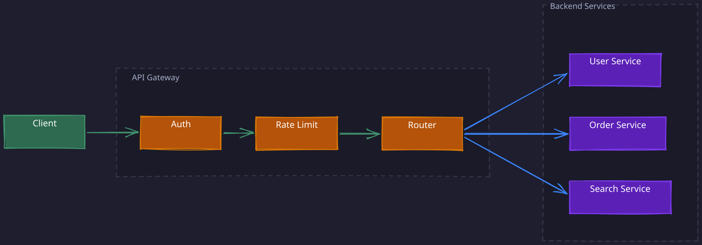
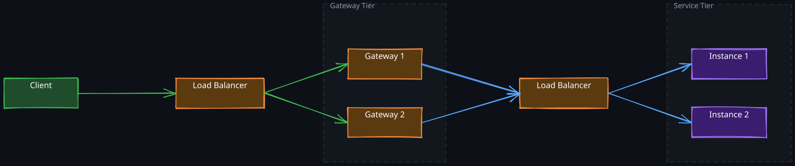

The Story
Netflix named their API gateway “Zuul” after the Ghostbusters character — “There is no Dana, only Zuul” — because it is the gatekeeper that sits between the outside world and internal services. When Netflix moved from Zuul 1 (blocking, thread-per-connection) to Zuul 2 (async, non-blocking), they reduced thread counts from thousands to dozens per instance while handling the same traffic volume. The migration took years because rewriting a gateway that processes tens of billions of requests per day without downtime is like replacing the engine on a plane mid-flight.
1. The Cross-Cutting Concerns Problem
In a microservices architecture, every service that faces external traffic needs to handle a common set of concerns: authentication, rate limiting, logging, protocol translation, CORS, and SSL termination. The naive approach is for each service to implement these independently.
This creates two serious problems. First, duplication — every team writes and maintains its own auth middleware, its own rate limiting logic, its own request logging. Second, and more dangerous, drift — over time these independent implementations diverge. One team upgrades their JWT validation library while another does not. One service enforces rate limits per user while another enforces per IP. One service logs request bodies while another omits them, creating blind spots in incident response.
The key insight is that these concerns are not business logic — they are infrastructure concerns that apply uniformly to all external traffic. Centralizing them into a single layer eliminates both duplication and drift. That layer is the API gateway.
Related Topics: Rate Limiting, Authentication, 01-Caching-Techniques, 01-Observability
2. What an API Gateway Actually Does
An API gateway sits between external clients and internal services. It is the only component exposed to the public internet. All client requests pass through it before reaching any backend service, and all responses pass back through it before reaching the client.
Think of it as a programmable reverse proxy with application-level intelligence. A traditional reverse proxy forwards requests based on URL patterns. An API gateway does that plus authentication, rate limiting, request/response transformation, protocol translation, caching, and observability — all in one hop.

The gateway enforces a clear boundary: external traffic is untrusted and must be validated; internal traffic between services is trusted and travels over a private network. This boundary is fundamental to the security model of any microservices deployment.
3. Request Lifecycle Through the Gateway
Understanding the full lifecycle of a request through an API gateway reveals why each stage exists and why the ordering matters.
1. Validation and SSL Termination
The request first hits the gateway over HTTPS. The gateway terminates SSL here, meaning it decrypts the TLS connection and communicates with backend services over plain HTTP on the internal network. This is a deliberate design choice: TLS termination is CPU-intensive, and centralizing it at the gateway means backend services avoid that overhead. It also simplifies certificate management — you rotate certificates in one place instead of across dozens of services.
After decryption, the gateway validates the request structure. Malformed requests, missing required headers, oversized payloads — these are rejected immediately before consuming any backend resources. This is the cheapest place to reject bad traffic.
2. Authentication
The gateway verifies the caller’s identity, typically by validating a JWT token. This is one of the most important architectural decisions in the gateway design, and it deserves careful reasoning.
Why validate at the gateway instead of at each service? Three reasons:
-
Single validation point. JWT validation requires fetching and caching the identity provider’s public keys, handling key rotation, checking token expiry, and validating claims. If every service does this independently, you have N implementations to maintain and N points where a bug could bypass authentication.
-
Services trust internal traffic. Once the gateway validates a request, it can forward the authenticated user’s identity (user ID, roles, permissions) as internal headers. Backend services extract these headers directly without re-validating the token. This is both simpler and faster.
-
Reduced latency. JWT validation involves cryptographic signature verification. Doing this once at the gateway instead of at every service in a request chain (gateway -> service A -> service B -> service C) eliminates redundant computation. In a deep call chain, this savings compounds.
The gateway decodes the JWT, verifies the signature against the identity provider’s public key, checks that the token has not expired, and validates relevant claims (audience, issuer, scopes). If any check fails, the gateway returns a 401 immediately — the request never touches backend infrastructure.
3. Rate Limiting
After authentication, the gateway enforces rate limits. The ordering matters: you authenticate first so that rate limits can be applied per-user rather than just per-IP. This prevents a single authenticated user from consuming disproportionate resources while allowing legitimate high-traffic IPs (like corporate NATs) to operate normally.
Rate limiting at the gateway protects backend services from being overwhelmed, whether by misbehaving clients, traffic spikes, or deliberate abuse. Common algorithms include token bucket (smooth, allows bursts up to bucket size) and sliding window (precise, but requires more state). See 03-Rate-Limiter for a deep dive on rate limiting algorithms and distributed rate limiting.
4. Routing and Protocol Translation
The gateway maintains a routing table that maps incoming requests to backend services based on URL path, HTTP method, headers, or query parameters. This decouples clients from the internal service topology — clients hit a single domain, and the gateway decides which service handles each request.
Protocol translation happens here as well. External clients typically speak HTTP/REST or GraphQL, but internal services might communicate over gRPC for performance. The gateway translates between these protocols transparently, allowing teams to choose the most appropriate internal protocol without affecting the external API contract.
5. Response Handling and Caching
The gateway can cache responses for read-heavy endpoints, reducing backend load. It can also transform responses — stripping internal fields, adding CORS headers, compressing payloads — before returning them to the client.
CORS handling is particularly well-suited to the gateway. Cross-Origin Resource Sharing requires inspecting the Origin header and attaching the correct Access-Control-Allow-* headers to responses. Centralizing this in the gateway ensures consistent CORS policies across all endpoints rather than having each service manage its own CORS configuration (another instance of the cross-cutting concerns problem).
4. API Gateway vs Load Balancer
These two components operate at different layers and solve different problems, but they are often confused because both sit in front of backend services.
A load balancer distributes traffic across multiple instances of the same service. It operates at L4 (TCP/UDP — routing based on IP and port) or L7 (HTTP — routing based on URL, headers). Its primary goal is even distribution of load to prevent any single instance from being overwhelmed. It has no awareness of application semantics — it does not know what an “authenticated request” is or what “rate limiting” means.
An API gateway operates exclusively at L7 and understands application-level semantics. It routes requests to different services (not different instances of the same service), applies authentication, enforces rate limits, translates protocols, and transforms requests/responses.
| Dimension | API Gateway | Load Balancer |
|---|---|---|
| Layer | L7 only | L4 or L7 |
| Routing target | Different services based on path/method/headers | Different instances of the same service |
| Application logic | Auth, rate limiting, transformation, caching | None — purely traffic distribution |
| Health awareness | Service-level health | Instance-level health checks |
| Protocol | HTTP/HTTPS, WebSocket, gRPC translation | TCP, UDP, HTTP |
| Examples | Kong, AWS API Gateway, Apigee | AWS ALB/NLB, Nginx, HAProxy |
1. How They Compose
In production, you use both. They are complementary layers in the request path:
Client -> Load Balancer -> API Gateway instances -> Load Balancer -> Service instances
The first load balancer distributes traffic across multiple API gateway instances (the gateway itself must be horizontally scaled). Each gateway instance processes the request (auth, rate limiting, routing) and forwards it to the appropriate backend service. A second load balancer (or service mesh) distributes that traffic across instances of the target service.
The mental model: the load balancer answers “which instance?”, while the API gateway answers “which service, and should this request be allowed at all?”

5. Scaling the Gateway
The API gateway itself must not become a bottleneck. Two strategies apply:
Horizontal scaling. Deploy multiple gateway instances behind a load balancer. Since the gateway is stateless (JWT validation is self-contained, rate limit counters live in a shared store like Redis), adding instances is straightforward. The load balancer in front of the gateway tier distributes traffic evenly.
Geographic distribution. Deploy gateway instances in multiple regions and use DNS-based routing (GeoDNS or Anycast) to direct clients to the nearest gateway. This reduces latency for the initial TLS handshake and authentication, which are the most latency-sensitive operations in the request path.
6. When to Use an API Gateway (and When Not To)
An API gateway is not free. Understanding its costs is essential for making a sound architectural decision.
1. The Costs
- Additional network hop. Every request passes through the gateway before reaching a backend service. This adds latency — typically 1-5ms, but under load or with complex middleware chains, it can be more.
- Single point of failure. If the gateway goes down, all external traffic stops. This demands high availability: multiple instances, health checks, automatic failover, and careful capacity planning.
- Operational complexity. The gateway becomes critical infrastructure that needs its own monitoring, deployment pipeline, configuration management, and on-call rotation. Routing rules, rate limit policies, and auth configurations must be kept in sync with service deployments.
- Coupling risk. If gateway configuration changes require coordination with service teams (e.g., adding a new route when a service ships a new endpoint), the gateway becomes a deployment bottleneck.
2. When the Benefits Outweigh the Costs
Use an API gateway when:
- You have multiple backend services that share cross-cutting concerns (the core value proposition)
- External clients need a stable API surface that is decoupled from internal service topology
- You need centralized authentication, rate limiting, or protocol translation
- Multiple client types (web, mobile, third-party) need different API shapes for the same underlying services (the “Backend for Frontend” pattern)
Skip the API gateway when:
- You have a monolith or a small number of services where each service can handle its own concerns without significant duplication
- You have a single client type with simple routing needs — a load balancer with basic path-based routing may suffice
- Internal service-to-service traffic — gateways are for the edge, not for internal communication (use a service mesh for internal cross-cutting concerns)
3. Popular Implementations
| Type | Examples |
|---|---|
| Managed services | AWS API Gateway, Azure API Management, Google Cloud Endpoints |
| Open source | Kong, Tyk, Express Gateway, Envoy (with gateway configuration) |
Revision Summary
- API gateways exist to centralize cross-cutting concerns (auth, rate limiting, logging, CORS, SSL termination) that would otherwise be duplicated across every microservice, leading to inconsistency and drift.
- The gateway is the trust boundary: external traffic is untrusted and validated at the gateway; internal traffic is trusted. Services receive pre-validated identity headers instead of re-verifying JWTs.
- Request lifecycle: SSL termination, request validation, authentication, rate limiting, routing/protocol translation, response transformation/caching. The ordering matters — authenticate before rate limiting so limits apply per-user.
- A load balancer distributes traffic across instances of the same service (L4/L7). An API gateway routes to different services with application-level logic (L7 only). In production, they compose: LB -> Gateway tier -> LB -> Service tier.
- The gateway is horizontally scalable because it is stateless (shared rate limit counters in Redis, self-contained JWT validation). Geographic distribution reduces latency via GeoDNS/Anycast.
- The costs are real: additional latency, single point of failure risk, operational complexity, and potential deployment coupling. Use a gateway when cross-cutting concern duplication justifies the overhead; skip it for monoliths or simple architectures.
Deep Understanding Questions
- If the API gateway validates JWTs and forwards user identity as internal headers, what prevents a compromised internal service from forging those headers and impersonating another user? How would you mitigate this? Ans:
- Rate limiting at the gateway uses a shared counter store (e.g., Redis). What happens during a network partition between gateway instances and the Redis cluster? Should the gateway fail-open (allow requests) or fail-closed (reject requests)? What are the consequences of each choice? Ans:
- The gateway is a single point of failure. Describe a concrete failure scenario where the gateway tier goes down and explain the blast radius. How would you design the gateway tier to achieve 99.99% availability? Ans:
- If you have 50 microservices and each ships new endpoints weekly, how do you prevent the gateway’s routing configuration from becoming a deployment bottleneck? What are the tradeoffs between centralized route management and service-owned route registration? Ans:
- The gateway terminates TLS and forwards requests over plain HTTP internally. What attack vectors does this open on the internal network? When would you justify the overhead of mutual TLS (mTLS) between the gateway and backend services? Ans:
- Consider a request that passes through the gateway, hits Service A, which calls Service B, which calls Service C. The gateway enforces a 5-second timeout. Service A has a 3-second timeout for its call to B, and B has a 2-second timeout for C. What happens if C is slow? How should timeouts be configured across the chain to avoid resource leaks? Ans:
- How does an API gateway interact with a service mesh like Istio or Linkerd? Where do their responsibilities overlap, and how would you divide cross-cutting concerns between them without double-applying policies? Ans:
- You deploy a new version of the gateway configuration that has a routing bug, sending all
/api/paymentstraffic to the wrong service. How would you design the gateway deployment process to catch this before it affects production traffic? Ans: - The gateway caches responses for a read-heavy endpoint. A backend service deploys a breaking change to that endpoint’s response format. Cached responses now have the old format while fresh responses have the new format. How do you handle cache invalidation during deployments? Ans:
- At very high scale (millions of requests per second), the gateway’s middleware chain (TLS termination, JWT validation, rate limiting, routing) executes sequentially for every request. Which operations are the most CPU-intensive, and how would you optimize the pipeline to reduce per-request latency? Ans: